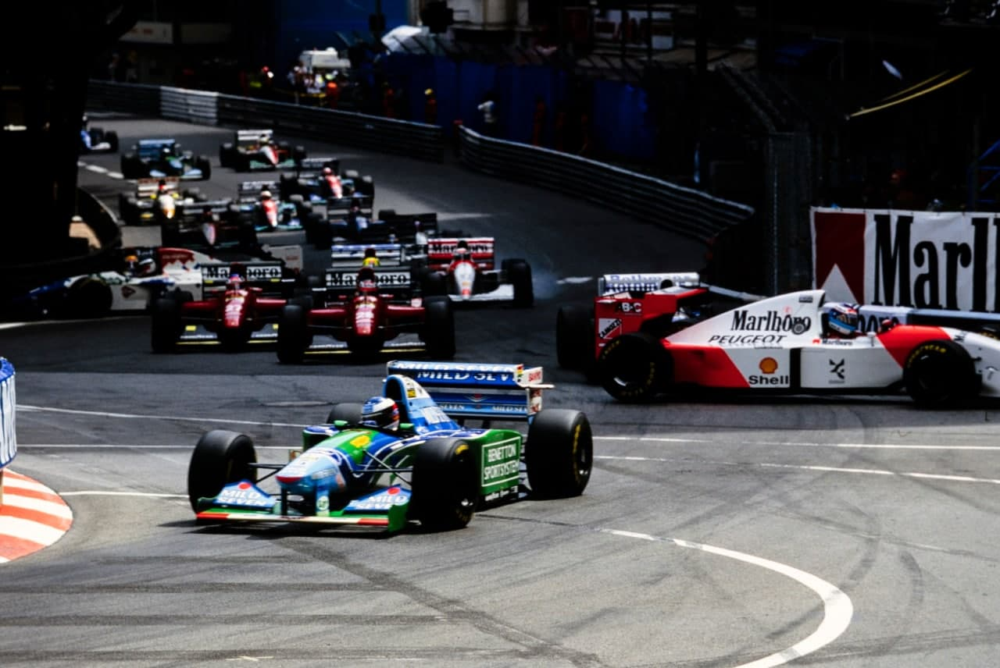
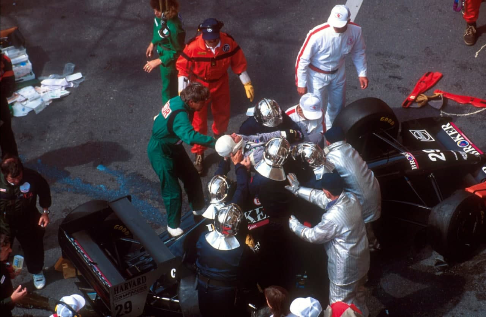
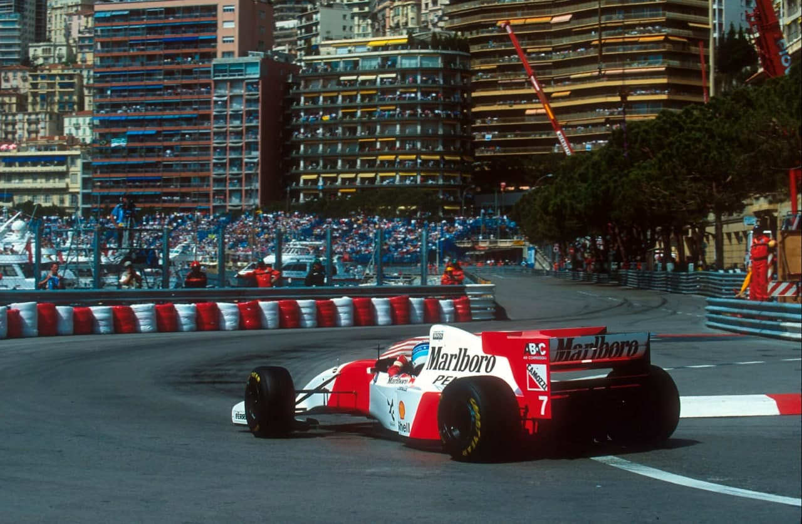
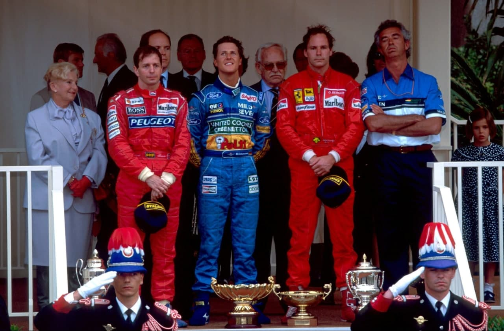

Nem todo o glamour de Monte Carlo serviu para dar a este GP o colorido habitual, pois os dramas de Imola ainda estavam na mente de todos e o acidente de Wendlinger só reforçou os receios gerais. Schumacher venceu pela quarta vez consecutiva e aumentou sua vantagem no campeonato.
Por Francisco Santos
Para todos aqueles que têm na Fórmula 1 o seu modo de vida, só um recurso a todas as reservas extras permitiu encontrar a motivação necessária para sair de casa e dirigir-se a Mônaco, para tomar parte no GP com que todos costumam sonhar, quer pelo encanto que sempre tem ver um Fórmula 1 rodar nos limites à volta das estreitas ruas do Principado, quer por todo o programa social que sempre acompanha a corrida monegasca. Mônaco é o GP que nenhum patrocinador quer perder, uma prova onde as atrações extra-esportiva conseguem ofuscar os Fórmula 1, em que o jetset mundial comparece em força e em que todos os pilotos sonham triunfar, mas, por uma vez, o Principado pareceu enfadonho, fútil e nada atraente. Duas semanas tinham sido muito poucas para que todos esquecessemos os três dias terríveis de Imola, onde num curto espaço de tempo todas as certezas se tornaram dúvidas, ao ponto de pilotos vencedores, como Berger, Schumacher e Hill terem colocado em equação a continuidade das suas carreiras. Que sentido fazia correr em Mônaco, se o recordista de vitórias neste circuito, seis triunfos em sete anos, já não estava entre nós? Que valor teria uma vitória no Principado na ausência de Ayrton Senna? O porto de Mônaco, repleto, como sempre, de imponentes iates, já não causava qualquer efeito aos “operários” da Fórmula 1, o Casino era totalmente desinteressante e não atraía ninguém, e a tradicional festa que sempre acompanha a prova monegasca foi uma pálida imagem de anos anteriores. Diz um velho provérboi das corridas que quando cai o sinal verde toda a m… fica para trás, mas a ilusão durou pouco mais de hora e meia. Terminava o primeiro treino livre e comentava-se a brilhante performance de Schumacher, ao volante do carro do seu companheiro de equipe, quando Karl Wendlinger se saiu da pista com violência na chicane do porto. Na altura, ocupados com os seus próprios problemas, quase ninguém deu pelo sucedido, pois o austríaco era o único piloto que restava em pista, mas quando as notícias começaram a chegar aos boxes, a Fórmula 1 voltou a ficar em estado de choque. Ao longo do resto do fim de semana, ninguém se entusiasmou fosse com o que fosse e nem mesmo os pilotos mostraram o nível de agressividade sempre patenteada nas ruas de Monte Carlo, com uma ou duas exceções. A sexta-feira, um dia tradicionalmente tranquilo em Mônaco, acabou por ser o dia mais importante do GP: de manhã os pilotos estiveram reunidos durante quatro horas e decidiram reavivar a Grand Prix Drivers Association; da parte da tarde, e de surpresa, o Presidente da FIA demonstrava que a Federação Internacional também estava a raciocinar mais com o coração do que com a cabeça e anunciava medidas de choque, muitas delas impossíveis de implementar nos prazos impostos inicialmente. Claramente faltava serenidade para enfrentar um momento difícil, em que os órgãos de comunicação não especializados, sedentos de escândalos, aproveitavam para “assassinar” a Fórmula 1, ao mesmo tempo que pressões políticas faziam a FIA vacilar e iniciar uma lamentável fuga para a frente. A incredulidade reinava entre as equipes de Fórmula 1 no sábado, e nem mesmo o dia da corrida se passou dentro da normalidade. O minuto de silêncio antes da largada foi um momento particularmente duro para todos os que tinham de trabalhar nos instantes seguintes, e só uma corrida monótona, com Schumacher sozinho na frente, permitiu algum descanso aos espíritos. Mas que a Fórmula 1 ainda estava sob os efeitos dos traumas de Imola, disso ninguém duvidava.

DE NOVO O FANTASMA DA MORTE
Ainda marcada pelos dramas de Imola, a fraternidade da Fórmula 1 ficou em estado de choque em Mônaco, quando Karl Wendlinger sofreu um acidente na chicane, nos instantes finais do primeiro treino livre. O jovem piloto austríaco perdeu o controle do seu Sauber-Mercedes ao frear tarde demais na saída do túnel, tocando de leve nos guard rails do lado direito da pista e partindo de lado em direção à divisória entre a escapatória e a pista. O embate foi extremamente violento, com o lado direito do cockpit acertando em cheio nas proteções. Wendlinger perdeu, de imediato, os sentidos, entrando em estado de coma e sendo transportado de emergência para o Hospital Saint-Roch em Nice, depois de um primeiro exame no Hospital Princesse Grace, no Mônaco. Poupado ao direto televisivo, o acidente de Wendlinger não teve o mesmo efeito dos de Imola, pouca gente se apercebendo da gravidade do acidente nos primeiros momentos. No entanto, pouco a pouco, começaram a chegar notícias alarmantes ao paddock, deixando todos extremamente consternados. Ao final da tarde de quinta-feira foi divulgado o verdadeiro estado do austríaco, na sequência de um comunicado do hospital em que se encontrava internado. Wendlinger sofria da presença de um edema cerebral difuso de intensidade média e de contusão cerebral, mas encontrava-se estável. Adiantava-se que só oito a dez dias mais tarde se poderia fazer uma idéia precisa da altura em que seria aconselhável reanimar o piloto da Sauber, que se encontrava ligado a um ventilador, sendo-lhe ministrada medicamentação anestesiante.

OS TREINOS
Com o desaparecimento do rei das pole positions, Michael Schumacher obteve em Mônaco a sua primeira afirmação em treinos qualificativos, confirmando que sem Ayrton Senna em pista ele era o grande, senão único, favorito à vitória no Mundial deste ano. A superioridade do piloto da Benetton foi gritantem sendo o mais rápido da pista em todas as sessões realizadas, até no WarmUp, com vantagens que variaram entre os três décimos e os 1,3 segundos sobre os dois pilotos da McLaren, que dividiram entre si os segundos lugares nas cinco sessões disputadas nas ruas do Principado. O piloto germânico esteve tão acima dos demais que até ao volante do carro de Lehto foi claramente mais veloz do que todos os seus adversários, quando necessitou do chassis do piloto finlandês no primeiro treino livre, depois do motor do seu B194, uma versão experimental, ter cedido logo no início da sessão. A partir daí ficou claro que a pole position não escaparia de Michael Schumacher, que se tomou no primeiro alemão a conseguir tal feito desde que Wolfgang Von Trips tinha obtido a única pole para o seu país no GP de Itália de 1961… em que viria a falecer.

McLaren em forma
Atrás do inalcançável Schumacher, a McLaren mostrou-se em grande forma, acabando mesmo por conseguir em Mônaco o seu melhor resultado de conjunto em treinos de toda a temporada. Sensacional foi Martin Brundle que se mostrou o maior rival de Schumacher nos dois treinos de quinta-feira, mas quando chegou a jornada decisiva, no sábado, a maior rapidez de Mika Hakkinen veio acima e, pela primeira vez na sua carreira, o jovem finlandês conseguiu um lugar na primeira fila de um GP, enquanto o seu companheiro de equipe era infeliz no último dia de treinos, caindo para o sétimo lugar. Tendo colocado em dúvida a sua continuação na Fórmula 1 após o drama de Imola, Gerhard Berger apareceu muito agressivo em Mônaco, conseguindo uma excelente terceira posição nos treinos, em um traçado onde as características do motor V12 italiano não ajudavam muito. Mais lento que habitualmente esteve Alesi, que voltava às competições, mas nem por isso o francês deixou de ser extremamente espetacular. Com Damon Hill a desiludir, ao ser apenas quarto, Christian Fittipaldi era uma das sensações da qualificação, ao colocar-se na sexta posição da grid, à frente do seu companheiro Morbidelli, enquanto Barrichello, se recuperando do acidente de Imola era apenas 15°, logo atrás do convidado Andrea de Cesaris.
A CORRIDA
Se algumas esperanças restavam de uma corrida equilibrada, Damon Hill encarregou-se de entregar “de bandeja” a vitória a Michael Schumacher logo na primeira curva. Não que o alemão necessitasse de ajudas externas para vencer em Mônaco, mas sem Hakkinen e Hill atrás de si tudo ficou ainda mais fácil para o piloto da Benetton. Com Schumacher a largar bem, Hakkinen nem tentou atacar o alemão na freada para a Saint Devote, mas foi surpreendido por um erro de Hill, que tinha efetuado um excelente arranque e calculara mal o seu ponto de freada para a primeira curva, tocando no McLaren, que rodou e abandonou de imediato. Quanto ao Williams, arrastou-se até à descida para Mirabeau com a direção quebrada, ficando, assim, dois potenciais adversários de Schumacher pelo caminho. Daí para a frente o líder do Campeonato destacou-se facilmente de Berger, enquanto atrás deste Alesi segurava Fittipaldi, Brundle e Blundell, deixando o austríaco isolado na perseguição ao primeiro. Tarefa impossível para quem, ao fim de 20 voltas, já estava a mais de 13 segudos do Benetton. Com os reabastecimentos a acontecerem por ordem pré-estabelecida, para evitar aglomerações nos boxes, nada nem ninguém interferiu com a cavalgada triunfal de Schumacher, que venceu com mais de meio minuto de avanço, apesar de uma clara diminuição de ritmo nas últimas voltas.
Brundle segundo
Martin Brundle acabou por ser um surpreendente segundo classificado, beneficiando-se duma rodada de Berger sobre o óleo deixado pelo motor partido de Blundell, mas o austríaco salvava um bom terceiro lugar para a Ferrari. Na sua despedida da Jordan, de Cesaris era um excelente quarto classificado, à frente de Alesi, atrasado por um toque no Simtek de Brabham e de Alboreto, que marcava o seu primeiro ponto com a Minardi. Fittipaldi perdia a chance de ser quarto quando a caixa de câmbio do seu Arrows cedia, enquanto Barrichello abandonava ainda mais cedo, vítima de problemas elétricos no seu Jordan.

ENTREVISTA COM CHRISTIAN FITTIPALDI
Quantos anos é possível amadurecer quando se perde dois companheiros de profissão num mesmo GP? Difícil dizer. Mas para Christian Fittipaldi foram muitos, certamente. Imola separou os homens dos meninos, e o Christian que deu um pequeno show em Mônaco parecia ter uma década de experiência sob o capacete que estampava uma homenagem ao ídolo morto. Se ainda não lembra Emerson na pista, parece o tio ao assumir seu lugar na associação criada pelos pilotos para lutar por segurança na F1.
Entrevista cedida à LUIZ ALBERTO PANDINI da revista GRID em maio de 1994.
GRID — Quando decidiram formara nova GPDA, em Mônaco, escolheram um piloto experiente (Berger), um destaque da temporada (Schumacher), um campeão aposentado (Lauda) e um representante dos novatos. Como o seu nome surgiu na história?
Christian —
Bem, não precisavam só de alguém jovem. Queriam também alguém com a tendência de ficar na F1 ainda vários anos, e com uma visão um pouco diferente da do Schumacher. Ele também é novo, mas já está numa equipe de ponta, enquanto eu ainda estou num time médio. Os problemas de um piloto que corre por uma equipe grande são completamente diferentes dos enfrentados por quem corre num time médio ou pequeno.
GRID — O passado de Emerson, que liderou a antiga GPDA, tornou seu nome uma escolha natural?
Christian —
Não. Não teve nenhuma influência.
GRID — Foi difícil fazer 28 pilotos de nacionalidades diferentes chegar a um acordo? Devem ter acontecido coisas até engraçadas nesse sentido...
Christian —
Menos do que eu pensava. Todo mundo lá falava inglês, então língua não era problema. O que me chamou a atenção foi que uns 10 minutos depois de começar a reunião já tinha gente olhando pro relógio, provavelmente pensando "que saco, até quando vou ter que ficar aqui?..." (risos). Mas à medida que o o assunto foi pegando fogo, não se via mais ninguém preocupado com o tempo. Passou uma, duas horas, e ninguém tinha idéia de que horas eram. Acho que, nesse aspecto, foi muito positivo. Conversamos de tudo: o que devia ser feito, o que não devia ser feito... Mas sem decidir nada, só ouvindo opiniões. Discutimos desde coisas técnicas até se devíamos ter corrido em Imola depois do acidente do Ratzenberger, ou se devemos subir ao pódio caso aconteça outra tragédia. Ouvi muitas críticas porque os pilotos subiram ao pódio depois de tudo aquilo. Mas não foi culpa nossa, a gente não sabia direito o que estava acontecendo. A coisa mais natural do mundo é você parar o carro depois da corrida e o pessoal te levar para o pódio. Ninguém sabia como o Ayrton estava e só nos disseram a verdade depois.
GRID — A corrida estava parada, depois do acidente do Ayrton, quando apareceu a Larrousse de Erik Comas saindo com tudo dos boxes, quase batendo nos carros de serviço. O que aconteceu?
Christian —
Ninguém sabe. Aquele cara não devia ter saído, devia ter sido travado na saída do boxe. Acho que, na confusão, todo mundo estava em cima do Senna e esqueceram o boxe aberto. Ou ninguém sabia que havia carros e helicópteros espalhados pela pista. Chegavam todos os tipos de informação. Desde que Ayrton estava bem no hospital até que havia quebrado as duas pernas. Isso tudo antes da nova largada. O que se faz numa situação dessas? Você pensa que ele está bem, você é pago pra fazer parte do show e ele tem que continuar. Se chegasse na hora a informação de que ele estava em coma ou clinicamente morto, a situação mudaria completamente.
GRID — Você acha que foi por isso que esconderam dos pilotos a informação verdadeira?
Christian —
Não sei. Mas em nenhum momento, antes da nova largada, falaram que ele estava mal. Em nenhum momento. Quando parei, faltando três voltas, os bandeirinhas perguntavam como eu estava e ninguém sabia direito do Ayrton. Só sabiam que ele tinha sido levado de helicóptero para Bolonha. A primeira pessoa que me falou da morte dele foi minha namorada, quando cheguei ao motorhome.
GRID — E qual foi a sua reação? Você chegou a ir para o hospital?
Christian —
Não. Na confusão, não dava pra sair de carro do circuito, o trânsito tava um inferno. Quando ficamos sabendo que ele estava clinicamente morto, o Galvão Bueno mandou um recado para eu nem ir para lá, porque não ia ser bom pra mim. Aquilo foi um choque muito grande. Me deu um tremendo vazio.
GRID — No acidente do Ratzenberger, no sábado, também houve a tentativa de esconder o estado dele até o pessoal voltar a treinar? Estava na cara que era grave, porque fizeram massagem cardíaca nele, ainda na pista...
Christian —
Eu já estava meio cismado por causa do acidente do Rubinho, na sexta-feira. Quando o Roland bateu, eu estava no boxe, acompanhando pelos monitores de TV que colocam em cima dos carros. A câmera mostrou ele batendo e imediatamente mudei de canal (os monitores dos pilotos recebem as imagens da TV e os tempos da cronometragem oficial do GP). Nem fiquei olhando, porque estava apreensivo, principalmente se tivesse que sair para classificar. Algumas equipes pararam, mas eu recebi ordens para continuar. Já que eu teria que continuar, pensei: "E melhor nem ver o que aconteceu. Espero que ele esteja bem. Agora, não posso fazer nada por ele". A gente treinou e já deviam saber que ele estava mal e não ia sobreviver, mas ninguém passou nenhuma notícia. Só ficamos sabendo da morte dele mais ou menos uma hora depois de terminada a classificação.
GRID — Como fica a cabeça nesses casos?
Christian —
É difícil dizer. Foi por isso que nem olhei mais no monitor...
GRID — E depois, quando teve tempo de pensar?
Christian —
Eu fiz uma análise. Em Imola, éramos 28 pilotos e morreram dois. Isso dá 7%, é uma conta impressionante. Sete por cento dos pilotos que foram a Imola não voltaram, eu fazia essa conta à noite, no domingo, e é um negócio que te deixa em estado de choque. Foi aí que todo mundo parou para pensar no que precisávamos fazer. Não só em benefício dos pilotos de hoje, mas também de uma geração próxima, daqui a cinco, dez anos. Outros brasileiros vão chegar à F1, e é lógico que eu quero preparar algo melhor para eles. Estou passando momentos difíceis e não desejo isso para ninguém. Quem sabe, um dia, meu filho vai correr na F1. Por que vou querer deixar uma coisa ruim para ele?
GRID — Depois de tudo, você sentiu mudanças na abordagem do público? As pessoas se afastaram ?
Christian —
Sempre tem quem se afasta por achar que, se o Senna morreu, a F1 é uma porcaria. Eu não penso assim. Vamos sentir muita falta do Ayrton, mas ele era uma pessoa tão forte que nunca vai ser esquecido. A F1 trouxe muitas alegrias para o país, o Ayrton era uma pessoa realizada e feliz por causa da F1. Sem ela, talvez não fosse. E preciso entender que é um esporte de risco. Poderia ter acontecido com qualquer piloto. Acho que o número de pessoas que se aproximaram mais de mim e do Rubinho é maior que o dos que se afastaram do esporte. A gente sempre vai ter lembranças ótimas do Senna para passar a outras gerações. Algo do tipo "Pô, filho, corri com esse cara, ele era o máximo na F1, era o melhor que tinha lá dentro..." O fato de ele ser tão forte vai ficar guardado nas nossas mentes pelo resto da vida.
GRID — Fora da pista, quais lembranças você guarda do Ayrton?
Christian —
Alguns jantares que a gente teve, com piada para cá, piada para lá... Mas eu sempre lembro dele como um todo. Penso muito nele dentro da pista. Era uma pessoa de uma determinação e uma garra incríveis. Sempre queria mais, tinha que ser melhor que ele mesmo. Por aí você vê o tamanho da força de vontade dele.
GRID — Vamos falar um pouco sobre essas modificações que serão feitas nos carros. Você acha viável diminuir a velocidade nas curvas sem fazer a mesma coisa nas retas?
Christian —
Pois é. Acho estranho alguém pensar que os pilotos vão fazer curvas mais devagar voluntariamente. Hoje, seria preciso tirar uns 150 cavalos dos motores da F1. Se a potência cair para 600 a 650 cavalos, vai continuar interessante para o piloto e para o público, e trará mais segurança. Se só tirarem asa do carro, pode ficar até mais perigoso. O carro vai ter menos aderência, mas vai andar mais em linha reta por causa da menor pressão aerodinâmica. E terá a mesma potência nas entradas e saídas de curva.
GRID — Alguns acham que a F1 de hoje está parecida com a época do carro-asa. Enquanto tudo está em ordem, rodas no chão e pista perfeita, o carro tem aderência. Mas basta uma ondulação, uma zebra ou algo que mude o comportamento aerodinâmico por um instante para o carro ficar incontrolável. É isso que está acontecendo?
Christian —
Um pouco. Nos carros com suspensão ativa, por outro lado, você dependia de muitos fatores que eu achava mais perigosos. Se o carro estivesse a 250 km/h no meio da curva e desse um tilt no software, a suspensão se descontrolava e você batia sem nenhuma explicação. Hoje, o carro é muito mais sensível. Você tem menos falhas mecânicas, mas a dificuldade de guiar é muito maior que antes. Eu diria que dirigir antes era mais fácil, mas não mais seguro.
GRID — Você disse que os carros podem até ficar mais perigosos. O que acontecerá se chegar numa pista e os pilotos acharem que ficou muito pior? Há possibilidade de não correrem?
Christian —
Te digo isso na segunda-feira seguinte... (risos). Sinceramente, não sei o que pode acontecer num caso desses.
GRID — Após Imola, sua mãe confessou que cada derrapada sua se transformava numa agonia cada vez mais difícil de suportar. Qual foi a reação da sua família a toda essa tragédia ?
Christian —
Bom, com meu pai e meu tio é mais fácil porque eles são pilotos e sabem o que se passa comigo dentro do carro. É uma visão que minha mãe e meus avós não têm. Entendo o lado deles, mas eles também entendem o meu. Apreensão sempre vai ter. Mas eles sabem que estou fazendo o que mais quero na vida...
GRID — Sempre disseram que quando você e o Rubinho estivessem em equipes de ponta, a inimizade dos tempos do kart iria ressurgir. Será que vai?
Christian —
Acho que não. Nós aprendemos e crescemos muito nos últimos anos. A rivalidade é uma coisa dentro da pista e outra bem diferente fora dela. Vou tentar sempre andar na frente e ele vai fazer a mesma coisa. Acho isso muito bom pra gente, desde que seja uma rivalidade positiva e os dois sejam leais um com o outro dentro da pista. Eu e o Rubinho amadurecemos muito nos últimos anos. Rivalidade dentro da pista é uma coisa, fora dela é bem diferente. Acho isso muito bom para nós dois corrida de uma hora e meia?
GRID — Essa mudança para uma equipe grande pode acontecer ainda este ano?
Christian —
Acho muito difícil. Mudar de equipe no meio da temporada implica em vários fatores, não é fácil como parece. Mas pode ter certeza: há grandes possibilidades de eu e o Rubinho estarmos em equipes melhores na próxima temporada.
GRID — Você andou bem em Mônaco. Só a pista ajudou ou o carro está real mente muito bom?
Christian — Evoluímos muito nesse começo de ano e conseguimos colocar tudo em prática em Mônaco. Em São Paulo, eu contava quantas voltas o carro ia durar. Nos treinos, o câmbio trocava de marcha errado e eu pensava: como um carro desses terminaria uma corrida de uma hora e meia? Era impossível! Em Aida, o problema do câmbio foi resolvido, mas o carro estava cru. Mesmo assim, deu para ver o quanto ele andava. Em Imola, foi um problema de acerto: nos treinos, o Gianni estava usando o carro de outro jeito, mas eu insisti no meu, e foram dois dias em que não andei nada. Mudamos tudo para a corrida e, mesmo largando lá atrás, fui passando todo mundo. Em Mônaco, já conhecíamos bem o carro, que era totalmente novo. Colocamos tudo em ordem na hora certa, usamos os pontos positivos e o resultado foi ótimo. Mas, até chegar nisso, precisamos de tempo para aprender sobre o carro, que era totalmente novo.
GRID — O que ainda dá para esperar até o final desta temporada? Um lugar no pódio... uma vitória, talvez?
Christian —
Vitória é difícil. Mas nunca se sabe... Pódio, eu espero com uma certa segurança, devido ao que andamos em Aida e, principalmente, Mônaco. Ali, foi um sensorzinho do câmbio que me tirou da prova. O Berger ficou atrás de mim depois de trocar pneus e não conseguia me passar. Consegui andar junto com os carros de ponta e isso me deixou muito satisfeito. Espero que continue assim até o final do ano.